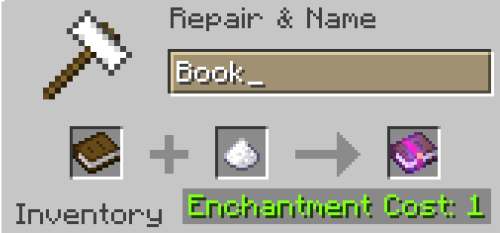
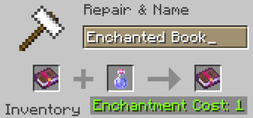
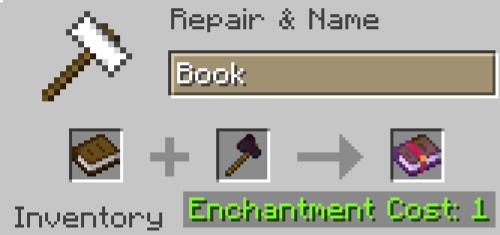

Enchants
Fancy ways to build on your tools/armor to enhance your Onyx experience.
So here are all the new fancy custom enchantments we add!
Speed
A quick and easy speed enchant, there are three versions of this, Speed I, Speed II, and Speed III. They go on boots. To obtain it, put sugar on a book in an anvil. Then to upgrade the book, put a Speed Potion on it, then to upgrade it again, put a Speed II Potion on it.
 Timber
Chop down an entire tree with one blow! It goes on axes. To get this book, put a diamond axe on a book in an anvil.
Headman's Glint
When this enchantment is put on your axe, most mobs (including players) drop their heads when you kill them. It even works on wither skeletons for wither skeleton skulls. To obtain this enchantment, it has a 1/300 drop rate from vindicators, so get farming!
Leaping
Jump high into the sky! It goes on your boots and is obtained by putting a Jump Boost Potion for Leaping I, and a Jump Boost 2 Potion for Leaping 2, similar to the Speed enchant.
Life Force
Perfect for pvp perfectionists. This chestplate enchantment gives you 3 extra hearts when equiped. You can find these in End City treasure chests. So take to the skies and get equiped. Also, a note, that it nerfs protection when you put it on.
Notch
This one is sort of a joke enchantment. You can find it in mineshaft chests and when put on a golden apple in an anvil, turns it into an enchanted golden apple. The books are more likely to find than normal Enchanted Golden Apples, so this may be a better way to obtain them.
Vampirism
This sword enchant gives you regen every time you kill a mob, so in the heat of fighting in a dungeon, it can help save you at the last second. To obtain it, put a ghast tear on a book, similar to the Timber enchant.
Protection On Elytras!
This one itself is not a new enchantment, but an old enchantment brought in a new light! This update adds the ability to put Protection I-IV on your Elytra.